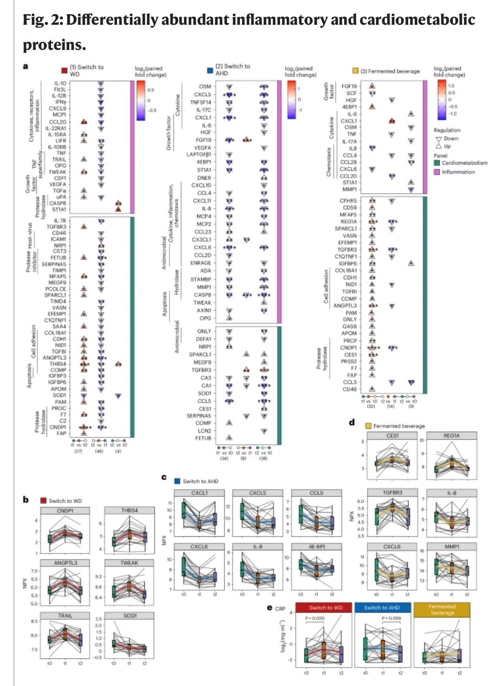
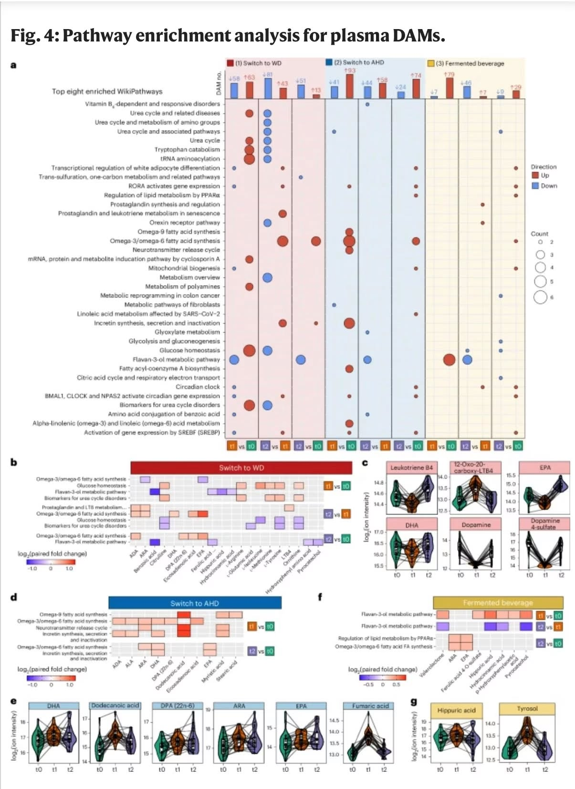
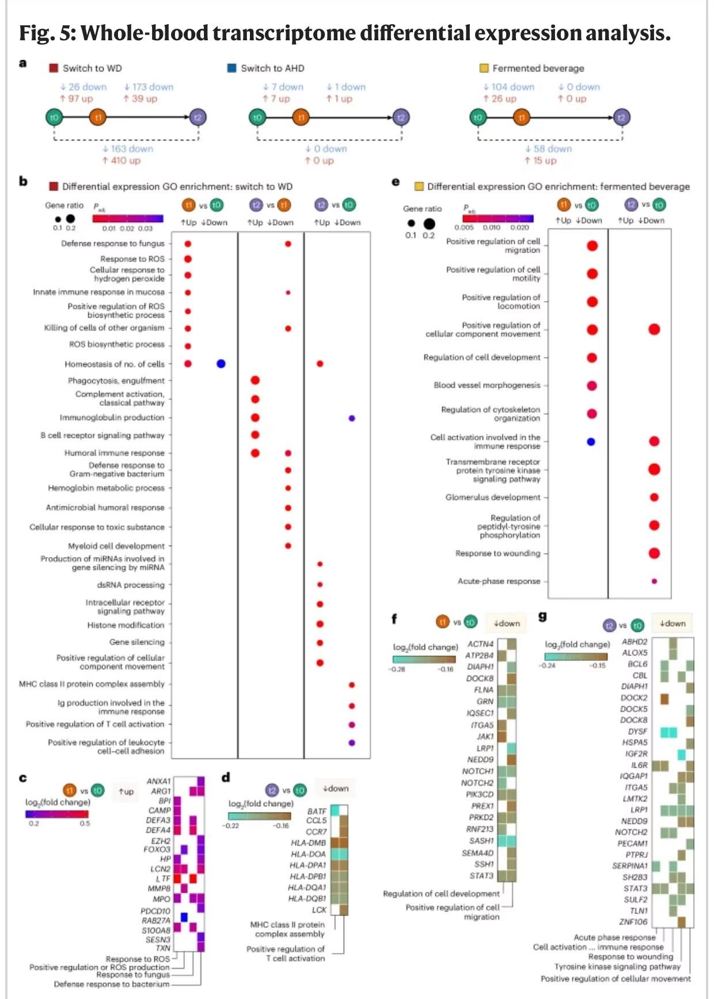

(no text — see the shared post below)
🧬 How Diet Rapidly Shapes Immunity and Metabolism: New Human Study in NatureMedicine shows 🥗🍔
A recent multiomics intervention study has provided striking evidence on how short-term dietary shifts can significantly impact inflammation, metabolism, and immune function—even within weeks.
Paper · Nat Med · 2025Immune and metabolic effects of African heritage diets versus Western diets in men: a randomized controlled trialAfrican heritage diets are increasingly being replaced by Western-style dietary patterns because of urbanization, economic development, increased access to processed foods, globalization and changing social norms. The health consequences of this nutrition transition are not well understood. We conducted a randomized controlled trial in the Kilimanjaro region in Northern Tanzania to investigate the immune and…doi.org
🔍 Study Overview:
77 healthy men, median age 25.6, underwent a controlled intervention in Tanzania.
Participants were assigned to one of three arms:
1- Switched from a traditional Kilimanjaro heritage diet (AHD) to a Western-style diet (WD).
2- Switched from a Western-style diet to the heritage diet.
3- Continued a Western-style diet but consumed Mbege, a traditional fermented banana beverage.
💥 Key Findings:
- Switching to a Western diet rapidly increased weight, inflammatory and cardiometabolic plasma proteins (e.g., THBS4, ANGPTL3), and altered over 300 metabolites. It also impaired cytokine responses and downregulated adaptive immune gene expression.
- Switching to a heritage diet reduced markers of systemic inflammation and enriched beneficial metabolites (e.g., DHA, fumaric acid), showing partial reversal of Western diet effects.
- Fermented banana beverage consumption boosted anti-inflammatory markers (like IL-10) and enhanced gut microbiota-derived polyphenol metabolites, with sustained reductions in inflammatory proteins and favorable transcriptomic shifts.
📊 Omics Integration:
- Whole-blood transcriptome, plasma metabolome, proteome, and cytokine responses all shifted in response to diet.
- The Western diet triggered innate immune activation and suppressed adaptive immunity.
- The fermented beverage supported transcriptional signatures associated with inflammation resolution and tissue repair.
🧠 Takeaway: Even brief dietary interventions—positive or negative—can profoundly influence immune-metabolic health. Traditional diets rich in minimally processed plant foods and fermented foods may offer powerful, low-cost tools for inflammation control and chronic disease prevention.
🔗 This study highlights the urgent need to rethink modern dietary habits in light of their immunological impact.
#NutritionScience #Immunology #Metabolomics #FermentedFoods #FunctionalFood #DietAndHealth #PrecisionNutrition #PublicHealth #Inflammation #Microbiome #TranslationalResearch



